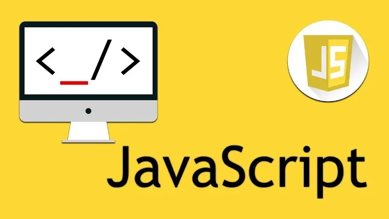
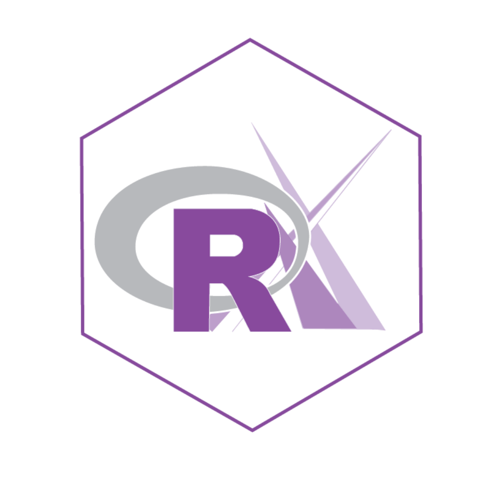

é uma linguagem de programação orientada a objetos, que foi desenvolvida pela Microsoft e faz parte da
plataforma . NET. Embora a linguagem C# tenha sido criada do zero, foi baseada na linguagem C++ e tem muitos
elementos da linguagem Pascal e Java.

JS
O JavaScript permite controlar os elementos de uma página em tempo real, sem necessariamente ter que
receber os dados ou uma resposta do servidor.
python
O Python é uma linguagem de programação amplamente usada em aplicações da Web, desenvolvimento de
software, ciência de dados e machine learning (ML).

R
R é uma linguagem de programação estatística e gráfica que vem se especializando na manipulação, análise e
visualização de dados, sendo atualmente considerada uma das melhores ferramentas para essa finalidade.